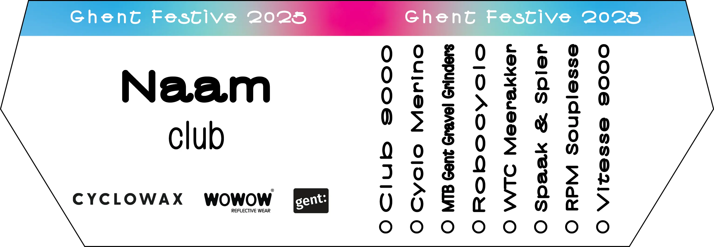

Ghent Festive 500
8 dagen • 8 Gentse fietsclubs • 8 social rides van 75 of 100 km
8 dagen
De Rapha Festive 500 is de eindejaarsfietsuitdaging bij uitstek, tussen kerstavond en oudejaarsavond minimaal 500 km fietsen. 8 Gentse fietsclubs helpen je voor een 4de keer met deze uitdaging.
Van 24 tot en met 31 december organiseert elke dag een andere Gentse fietsclub om 9h30 twee social rides, een van 75 km en een van 100 km, beide begeleid door wegkapiteins.
8 Gentse fietsclubs
8 social rides
No drop policy
Alle ritten zijn social rides met een no drop policy, i.e. er wordt comfortabel samen gereden en er is geen competitie. We motiveren mensen om te sporten in een periode waarin dit vaak moeilijk is door het winterweer en gebrek aan motivatie om alleen te fietsen. Bij kleine materiaalpech wachten we tot de pech verholpen is. In geval van onvoorziene omstandigheden kan de groep in overleg worden opgesplitst om ieders veiligheid en comfort te garanderen.
Pelotons en richtsnelheden
We rijden in verschillende pelotons met 2 snelheden: een sneller peloton en een trager peloton voor de 100 km, en een trager peloton voor de 75 km. Als de pelotons te groot worden, splitsen we ze verder op in kleinere groepen. De exacte snelheid van elk peloton hangt af van het parcours en de weersomstandigheden. Onze wegkapiteins bewaken het tempo om het comfortabel te houden voor alle deelnemers.
Wil je graag mee fietsen maar heb je weinig ervaring met in peloton te rijden? Bekijk dan de tips om veilig in peloton te fietsen.
Veiligheid
Elk peloton wordt begeleid door wegkapiteins (seingevers) die instaan voor het vlot en veilig verloop van de rit.
Kaderplaatje
Deelnemers kunnen voor de start van elke rit een gepersonaliseerd kaderplaatje aankopen tegen een vrije bijdrage, waarbij alle winst gaat naar Op Wielekes. Via Op Wielekes kunnen Gentse kinderen aan lage prijzen een kwalitatieve fiets huren.
Kalender
Wil je meefietsen? Zorg dat je fiets in goede staat is en zet je op aanwezig op het betreffende Strava evenement.
We verzamelen steeds om 9h00, en vertrekken om 9h30. De start- en finish locatie en het parcours (gpx) vind je in onderstaande kalender.